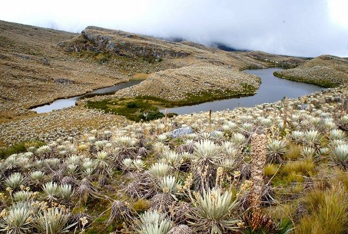

El Parque Nacional Natural Sumapaz es regulador hídrico de 3 regiones hidrográficas:
Región hidrográfica del Río Magdalena.Sus principales cuencas son: el Río Sumapaz, el Río Bogotá y el Río Cabrera |
|
Región hidrográfica del Río Meta.Su principal cuenca es el Río Blanco o Guayuriba. |
 |
Región hidrográfica de Río Guaviare.Sus principales cuencas son: el Río Ariari y el Río Guayabero con sus afluentes. |
 |
Las numerosas lagunas que encierra el área del Parque se clasifican según los ríos que las nutren, así:
 |
Río Blanco:Lagunas Negra, Larga, Casa Blanca, la Balsa, las Cáquezas, el Gallo, el Brisol, el Cobre, la Mochila y la Conejera. |
 |
Río Nevado:Lagunas Sitiales, del Medio, la Primavera, el Nevado, el Sorbedero, la Guitarra, la Maleza, el Rosario y el Guape. |
 |
Río Duda:Lagunas Patio Bonito, el Baile, el Infierno y Colorada. |
|  |
Río Ariari:Lagunas el Cajón, el Diamante, la Esmeralda, de Alsacio, Santa Teresa y la Pena. |
Río Sumapaz:Lagunas Larga, Negra, Currucuyes, Andabobos, la Hermosura y Guadalupe. |
|
 |
Río Tunjuelo:Lagunas las Lajas, los Tunjos o Chisacá y la Virginia. |
 |
Río Cabrera:Lagunas la Panela y la Triple Yegua. |